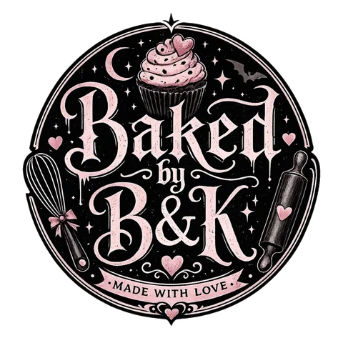

Meet Brandy, the baker behind Baked by BK

How it started
Baked by BK began the way a lot of home bakeries do: one birthday at a time. Brandy baked for family and friends, the requests kept coming, and before long people she'd never met were asking how to order.
Today she bakes out of her home kitchen in Blue Springs, MO, taking a small number of custom orders each week so every batch gets her full attention.
What makes her treats different
Nothing comes off a shelf. Every cookie, cupcake and cake pop is baked to order for your date, your colors and your crowd.
Her favorite trick is printing custom designs straight onto cookie icing: a birthday photo, a company logo, a team mascot, a wedding monogram. If you can picture it, she can usually put it on a cookie.
Her signature flavors are lemon blueberry sugar cookies and red velvet cupcakes with espresso icing, but she's always happy to talk through something new.
A neighbor, not a storefront
Baked by BK is a one-baker kitchen, not a shop with a counter. Orders are picked up in Blue Springs, and Brandy will bake for anyone in the Kansas City metro who's willing to make the drive.
Planning a celebration?
Tell Brandy what you have in mind. Please allow at least one week's notice.
Request an Order